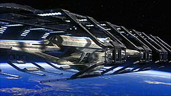
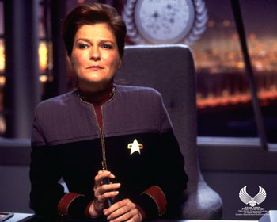
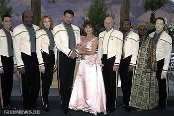
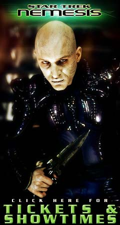
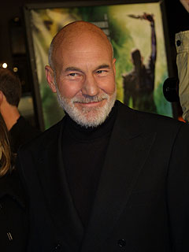

|
por Gustavo Leo
de
Los Angeles
 Para quem duvida que a... aham... poderosa franchise de nome
Jornada nas Estrelas anda com a moral l embaixo aqui nos EUA, deixe-me contar uma pequena histria que aconteceu comigo hoje, no dia da estria mundial de
"Nemesis" aqui na terra do Tio Sam e do Tio Rick Berman. Para quem duvida que a... aham... poderosa franchise de nome
Jornada nas Estrelas anda com a moral l embaixo aqui nos EUA, deixe-me contar uma pequena histria que aconteceu comigo hoje, no dia da estria mundial de
"Nemesis" aqui na terra do Tio Sam e do Tio Rick Berman.
Eu tenho uma meia dzia de amigos americanos "normais" (ou seja, no-trekkies) com os quais sempre saio nas noites de sexta-feira aps o trabalho para curtir umas cervejas no bar da esquina ou ir estria de um bom filme, j que todos eles so fs de cinema, com direito a muita pipoca e refrigerante. Alis, como morar em LA e no ser f de cinema? Diabo, alguns deles trabalham na indstria do cinema! Ento, no surpresa que nas ultimas estrias de filmes como "Harry Potter and the Chamber of Secrets" ou o timo (e vigsimo) filme da srie James Bond, "Die Another Day", l estvamos ns nas filas do cinema no dia da estria, discutindo ferozmente se a saga Harry Potter ou no baseada em livros (e filmes) para crianas ou se Pierce Brosnan um melhor 007 que Sean Connery.
Ento imaginem a minha surpresa quando, ao convidar esses meus animados amingos gringos para a sesso de estria de
"Star Trek Nemesis", fui recebido com olhares de desinteresse e at desprezo. "Star Trek is dead", "Star Trek sucks" ou "fuck Star Trek" foram alguns do comentrios que ouvi no decorrer da ltima semana, toda vez que eu tentava, ao vivo ou por telefone, convencer meus caros colegas a assistir estria do novo filme da
Nova Gerao. "Mas esse o ltimo filme", "o trailer me parece sensacional", blablabl, dizia eu, na esperana de que algum fosse comigo sem precisar me xingar de trekkie.

O fato que, quanto mais eu tentava convencer meus amigos, mais eu via o quando eles tinham razo de ficar com o p atrs com a "moribunda" franchise da Paramount. Yep, verdade o que a maioria deles dizia: o ltimo filme foi medocre, apenas um fraco episdio de TV na tela grande, com efeitos especiais e maquiagem ridculos (algum se lembra dos S'ona?) e por a vai. J as ltimas temporadas de
Voyager foram um episodio revoltante atrs do outro e, ao que parece, nem os trekkies mais fundamentalistas (isso um pleonasmo?) esto aguentando essa nova srie de clichs chamada
Enterprise, que se transformou numa coletnea de roteiros pssimos e que, na sua segunda temporada, conseguiu o impossvel: ser pior que a primeira temporada. Goste ou no de
Enterprise, seja trekkie ou no, no se pode negar um fato: a falta de criatividade na atual fase de
Jornada nas Estrelas conseguiu criar uma imensa insatisfao no pblico, com certeza. "Star Trek is dead, buddy." Ser?
Assim sendo, quando me reuni com meus dois amigos na frente de um cinema no Hollywood Boulevard no final da tarde de hoje, podia ver estampado na cara deles que eles estavam l apenas para fazer companhia a um amigo (no caso, eu) e no estavam nem um pouco interessados no filme. Nada. Zippo. Nothing.
A primeira coisa que notamos que a fila na frente do cinema era um verdadeiro QG de nerds. Dava para ver o imenso numero de trekkies por metro quadrado, a maioria do sexo masculino e com mais de 25 anos. Uma verdadeira conveno Trek ao ar livre. Vestidos com uniformes da Frota ou usando maquiagens de Klingons ou Vulcanos, l estavam os fs fanticos (opa, outro pleonasmo) em toda sua... err... glria. Bem exaltados, eles falavam em voz (bem) alta para que todos os habitantes do planeta Terra (incluindo ns) ouvissem suas opinies. E, rapaz, como ouvimos. Parece que a fila no andava e, durante esse tempo que mais pareceu uma eternidade, ouvimos esse bando afoito criticando
Enterprise, Voyager e at minha querida Deep Space Nine (pobre Sisko!), xingando mr. Berman, a me de mr. Berman e seu cachorro, dizendo como era a glria quando Picard e a turma dominavam os canais de TV e por a vai. "TNG a verdadeira Star Trek, no essa merda que passa na TV", disse um rapaz a alguns metros de mim, aplaudido por um punhado de gente (diabo, ele roubou minha frase!). medida que a fila ia (lentamente) andando, mais crticas: uns criticavam o pobre do Brannon Braga (que no tinha nada a ver com o filme, mas falar mal dele sempre bom!), outros mandavam a Paramount merda por ter cancelado
A Nova Gerao no seu auge (essa me deu vontade de rir, mas preferi no invocar a fria dos trekkies), como o tema musical de
Enterprise ruim, yadda-yadda-yadda... era uma platia bem nervosa, que dava at medo. "Se o filme no for bom", eu pensei, "vai haver uma verdadeira
"Insurreio" por aqui. Rarar." (Sorry, no consegui resistir a essa piadinha.)
Concluindo, eu e meus amigos resolvemos ficar quietos, comprar pipoca e Coca-Cola, sentar no cinema e, como j dizia meu pai l na roa em Minas Gerais, "seja l o que Deus quiser".
O filme comecou, eu me recostei na poltrona e esperei o pior...
Bom, vamos por partes. Primeiro, as ms notcias. A primeira coisa que me vem mente que o filme foi vaiado diversas vezes. Sim, vaiado. Foi a primeira vez que vi algo assim durante um filme de
Jornada nas Estrelas -- seja nos EUA ou no Brasil. E, eu tenho que admitir, foi com gosto que eu me juntei ao coro (e no me chame de trekkie)! Foi s aparecer a frase o nome de Rick Berman na telona, no fim do filme, e toda a platia comeou a vaiar, s parando de vaiar quando surgiu o nome do elenco. "Isso no um bom sinal", pensei. Mas o melhor (ou pior) foi antes -- a cena que foi mais vaiada, sem dvida, foi a apario "especial" da almirante Kathryn Janeway. Foi s uma envelhecida e abatida Kate Mulgrew dar o ar da graa na telona para a sala de cinema vir abaixo. "Fuck
Voyager", algum gritou. No estou brincando. Rapaz, esses trekkies odeiam mesmo
Voyager, e, depois da qualidade das ltimas temporadas, como culp-los? Mas onde eu estava... ah, sim, as vaias.

Por fim, a ltima e mais memorvel vaia veio quando surge na tela o nome de uma nave que estava junto a um comboio -- a USS Archer. Yep, uma nave nomeada em honra ao capito da suposta primeira nave estelar Enterprise do sculo 22. "Fuck Archer", algum gritou. (Juro que no fui eu!) E, num lapso de dja vu, pensei: rapaz, esses trekkies odeiam mesmo
Enterprise. E, depois da qualidade dos ltimos episdios, como culp-los?
E as notcias ruins no param a. Voc leu o roteiro que foi postado na internet? Se voc leu, saiba que as diversas cenas importantes que davam ao filme uma sensao de dramaticidade, a "aventura final" de
A Nova Gerao, se foram. Cenas cortadas aos montes. A tesoura de Berman (e, sem dvida, da presidente Sherry Lansing e dos executivos da Paramount) simplesmente retalhou o filme, coisa que j havia acontecido antes com
"Generations" e "Insurreio" -- parece que Berman e Lansing
no aprendem mesmo.

Diversas cenas importantes e centradas nos personagens foram deixadas de fora, e, de novo, se voc leu o roteiro, vai perceber como essas cenas fazem falta. A apario de Wesley Crusher se foi -- o Wes entra mudo e sai calado. A cena com Picard e Data na abertura do filme, em que
nossos heris comentam a passagem do tempo e da "velha guarda", foi totalmente cortada. O confronto entre Deanna Troi e Shizon tambm. E, mais importante, foram cortadas duas cenas importantes no final do filme: a primeira em que Picard recebe a bordo seu novo primeiro-oficial, o comandante Madden, e a segunda em que Picard, junto com Worf e seus novos oficiais, inspeciona a nova ponte da Enteprise-E e sua nova cadeira de comando. Tais cenas dariam ao filme a sensao de "passagem da tocha" a uma nova gerao de heris. Agora, sem essas cenas, o filme acaba como
"Primeiro Contato" e "Insurreio": nada mudou, tudo continua o mesmo, que venha a prxima aventura.
Se "Nemesis" for realmente o ltimo filme desse elenco, perdeu uma oportunidade de ouro de dar
Nova Gerao um sentido de "fechamento", de finalizao. O pior que at a morte do Data
tratada de forma mundana e simplria. "Nemesis" tenta demais ser igual a
"A Ira de Khan", mas esquece que o que torna aquele filme to especial no a batalha na nebulosa Mutara, mas sim as cenas entre os personagens: o almirante Kirk retomando o comando da nave aps anos, o relacionamento difcil entre Kirk e seu filho, a rabugenta tenente Saavik obcecada com regulamentos, Kirk e seu lema de "vencer a morte", o adeus entre Kirk e Spock, o Kobayashi Maru... e por a vai. Hollywood a terra da homenagem e do plgio, e
"Nemesis" tenta ser pico e sentimental como "A Ira de
Khan", seja no relacionamento entre Picard e Shizon ou na despedida de Data, mas, infelizmente, devidos aos cortes, o filme se perde nesse aspecto, s mesmo lembrando
"A Ira de Khan" nas cenas de batalha, que, ao que parece, so mais importantes para Berman e para o diretor Stuart Baird do que os personagens. Concluindo: Ao, nota 10, Personagens, nota 0. Alguns personagens como Worf, La Forge e Beverly Crusher nem aparecem direito. Dava para ver pela cara do Michael Dorn que ele no estava contente e mandou sua interpretao via fax.
Em "A Ira de Khan", a morte de Spock tratada de forma importante e at potica. Sentimos o sacrifcio, a perda, se d o adeus ao personagem de forma sentimental (mas no piegas). J em
"Nemesis" "Bum! Ops, l se vai o Data... mas ei, aqui est o novo andride B-4, o novo Data! Bem-vindo!" No d ao espectador, trekkie ou no, tempo de se emocionar.
At a morte de Tasha Yar teve mais sentimentalismo. A morte de Data, infelizmente, puro efeito especial e o novo androide Dat... quer dizer, B-4, alm de no trazer nada de especial ao roteiro, s serve para amenizar a falta do personagem. Santo reboot, hein?
uma pena. Berman insiste em tratar esses filmes como episdios de TV, e di ver as melhores idias do roteiro-de-f-feito-para-os-fs do trekkie e roterista John Logan serem largadas no cho da sala de edio. Bom, poderia ser pior. O roteiro poderia ser de Brannon Braga! J imaginou?
 Para mudar um pouco o tom, aqui vo as boas notcias: sejamos justos, havia muito a se aplaudir tambm durante os 120 minutos. Na sada do cinema, no deixei de notar a expresso de felicidade estampada na cara de diversas pessoas. No difcil adivinhar onde est o sucesso de "Nemesis": as cenas de ao so extremamente bem feitas e coreografadas. Nessa
rea, "Nemesis" realmente parece uma super-produo, sem dever a nenhum dos filmes lanados neste ano. Basta lembrar da corrida de jipes no planeta Kolarus III, a fuga de Picard e Data no ultra-cool Scorpion Fighter, a batalha final entre a Enterprise-E e a imensa e super-poderosa ave-de-guerra Romulana Scimitar, a exploso da ponte de comando da 1701-E, o incrvel "curso de coliso" entre as duas naves. Tudo muito bem dirigido pelo novato diretor Stuart Baird, com uma excelente direo de fotografia e
sensacionais efeitos especiais da Digital Domain. nessas horas que
"Nemesis" cresce como espetculo e prende a ateno da platia. At os meus amigos desanimados e no-trekkies (lembram deles?) acharam tais cenas de ao "cool" e se divertiram. O que traz a seguinte questo:
"Nemesis" um bom filme?
A verdade ... sim. Mesmo com todos os cortes, mesmo com a trilha sonora pssima (mais sobre isso depois), mesmo com o final fraco, "Nemesis" no a desgraa como dizem a maioria dos crticos (por exemplo, as pssimas review do "Variety" e da CNN), mas tambm no a maravilha pica que outros pregam (a maioria trekkies ou o pessoal do PR da Paramount). Com todo o respeito ao meu "chefe" no
TrekWeb, o webmaster e editor-chefe Steve Krutzler, que adorou o filme e deu a ele a cotao de "quatro estrelas" no seu review postado no TW (vai lar ler, diabos!), para mim
"Nemesis" no leva mais que trs estrelas e olhe l! Talvez duas estrelas e meia.
No um filme sensacional, no epico, no o melhor que A Nova Gerao tem a oferecer. No nenhum clssico como
"A Ira de Khan" ou "A Terra Desconhecida" ou at mesmo a verso do diretor de
"O Filme". um bom filme, um filme divertido e adequado, um filme cuja nfase a ao (ao com "A" maisculo) e a aventura, um filme que tenta (e consegue) agradar aos trekkies e no-trekkies (meus amigos que o digam).
 , na minha no to modesta opinio, o melhor dos filme da
Nova Gerao. Eu adoro A Nova Gerao, dude. Eu adoro Patrick Stewart e o elenco. Stewart consegue se sair bem at quando o roteiro ridculo -- vide "Insurreio". Os personagens da
Nova Gerao, assim como Kirk e Spock, so para mim velhos amigos. Se a
Srie Clssica e os filmes de Kirk e cia. eram a srie que eu amava quando era criana e adolescente,
A Nova Gerao sem dvida a srie de TV que marcou o fim minha adolescncia e o comeo da minha vida adulta. (Gee... e isso apesar de minha namorada me dizer que eu nunca vou crescer.)
Mas, voltando Nova Gerao, se por um lado eu adoro episdios como
"Yesterday's Enterprise", "Family", "The Best of Both Worlds" e (meu favorito)
"All Good Things...", por outro lado eu acho que os filmes da
Nova Gerao nunca chegaram ao nvel dos melhores episdios da srie para a televiso, ao contrrio dos filmes da
Srie Clssica, que se tornaram clssicos para mim (todos os seis filmes, diga-se de passagem, incluindo
"A ltima Fronteira", de Shatner). Para mim, a Paramount no est se esforando e no adianta chamar novos roteristas como John Logan, se mr. Berman no quer inovar.
No h nada de inovador nos filmes de A Nova Gerao e, se
"Nemesis" melhor que os ltimos filmes, porque ficaria difcil fazer de novo algo to ruim como
"Primeiro Contato" e "Insurreio". Ser que os filmes no esto ficando melhores, mas a expectativa dos trekkies (e do pblico em geral) que nunca esteve to baixa? Responda voc, quando o filme estrear a no Brasil, em fevereiro do ano que vem. Eu vou estar por a e quero ouvir sua opinio. Ser a baixa expectativa, o pessimismo gerado por
Enterprise e Voyager... ser essa a razo pela qual tem muita gente achando que
"Nemesis" um filme danado de bom? mesmo, mr. Berman?
E por falar em mr. Berman, no porque eu gostei do filme que no vou deixar de reclamar de um ponto em que sem dvida a culpa de nosso famigerado amigo (sempre ele), mr. Riquinho Berman. Yep, tem mais para reclamar! Ou voc nao pensou que ia escapar fcil assim, no ? A msica. Yep, a maldita trilha sonora. Para comear, de que adianta chamar um maestro super-talentoso como o lendrio Jerry Goldsmith e no deix-lo dar asas ao seu talento e produzir uma trilha sensacional e memorvel, como a de
"O Filme" e "A ltima Fronteira"? A trilha de
"Nemesis" pssima, a pior j feita para um filme da srie, parece pura msica de elevador (assim como as trilhas de
Enterprise) e, sem dvida, isso compromete o filme. Se Goldsmith tivesse feito uma trilha mais
instrumental e bombstica, principalmente nas cenas de ao, o filme seria muito melhor. como chamar um jovem e talentoso roterista como John Logan e depois retalhar seu roteiro. como chamar Kate Mulgrew como Janeway e Whoopi Goldberg como Guinan e so dar 20 segundos de presena para cada, em participaes menos que especiais. De que adianta o esforo? E o que adianta reclamar? Voc decide.
Para terminar, depois do filme, eu e meus amigos nos reunimos no ponto de nibus para comentar, mas, ao que parece, j tinhamos esquecido de
"Nemesis". Sendo assim, tivemos uma conversa animada sobre a estria do super-mega-hiper esperado "O Senhor dos Anis: As Duas Torres", na prxima quarta-feira. Tomara que
"Nemesis" (o filme mais caro da srie, custando seus 70 e poucos milhes de dlares) j tenha feito uma boa bilheteria at l. Seno o filme ser realmente "A Generation's Final Journey". Nuff said, mr. Berman.
|